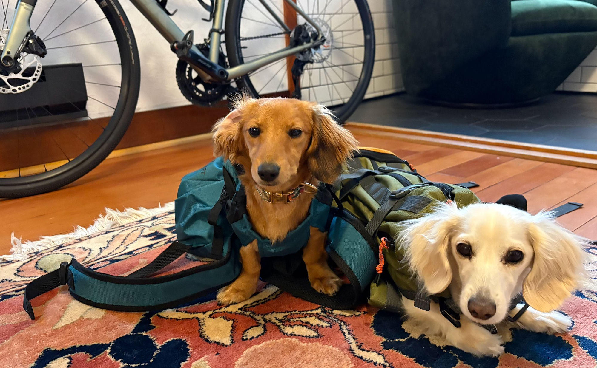
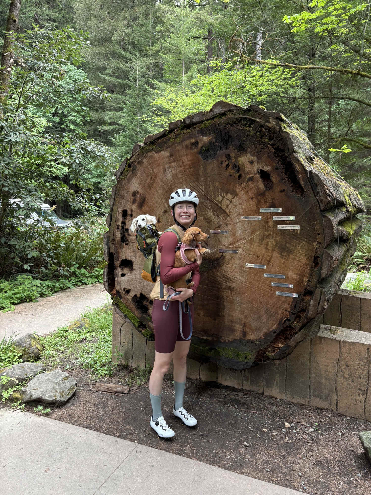
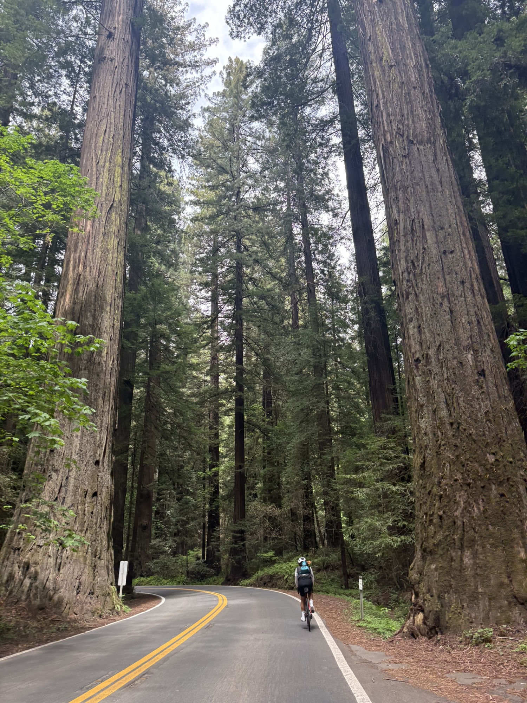
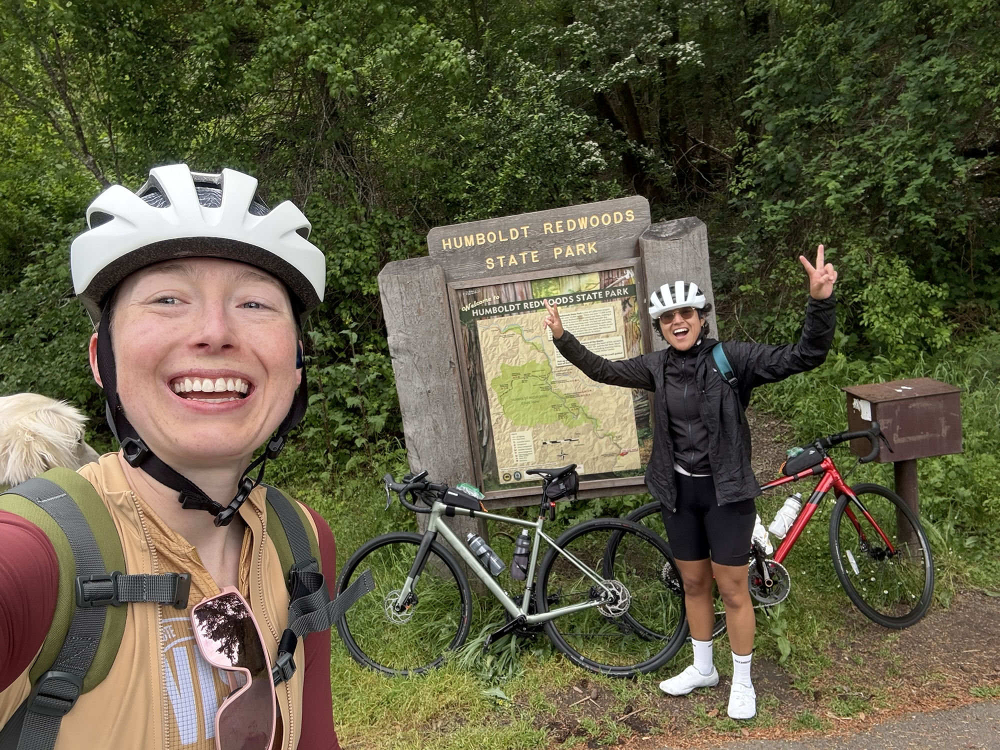
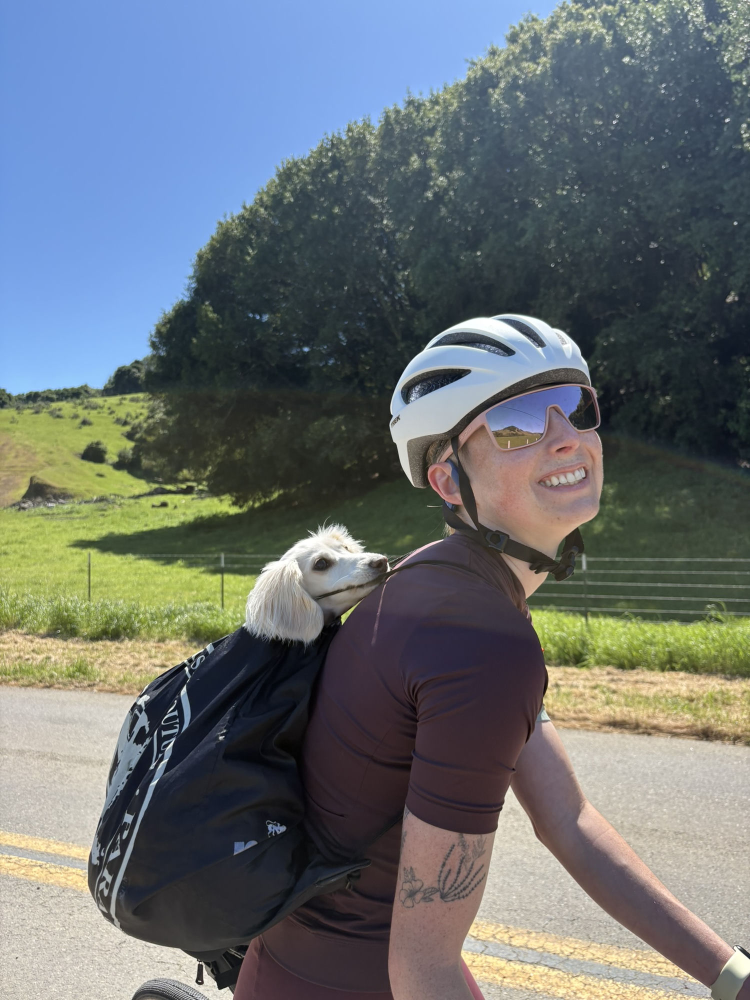

This was my longest bike ride to date and my first metric century. Three weeks before, I'd had a bike fit done — and those small adjustments to position made an almost five-hour ride far more comfortable than it had any right to be, even with 8lbs of miniature dachshund on my back.

Pepper (left) and Chip (right), our two miniature dachshunds, in their new bags getting ready to ride.
The route is an out-and-back following the famed 31-mile scenic drive through Northern California's Humboldt Redwoods State Park. At 1,900ft of total elevation it's not particularly demanding — mostly rolling hills — which made it a great entry point for a longer ride. There are campsites and restaurants scattered through the park, so plenty of spots to grab a snack, fill up water bottles, or drive through a "world famous" tree.

Next to a cross section of a massive Redwood tree, with little plaques indicating the tree's age around the rings.
The real highlight was the scenery, which was genuinely beyond breathtaking. We'd driven the route the day before, and there was nothing like taking it in over hours instead of minutes — biking feels like the way this stretch of road was meant to be experienced.

Following my wife Pamela through the Avenue of the Giants.
We also got incredibly lucky with the weather: we rode Sunday to perfect temperatures and clear skies, while Saturday had rained and Monday poured. I'm not sure who would have been more disappointed by bad weather — us or the dogs. (The dogs.)

At the southern entrance of the Avenue of the Giants — our turnaround point.
Carve Outs
Acquired — Formula One episode
Credit to Acquired for the carve outs format, and for their Formula One episode which I had on during part of this ride. It's wild to have completed a bike ride longer than an Acquired episode, and not something I would have been brave enough to do a year ago.
Proper Dog Backpacks
On our last long ride we forgot a hiking pack for Chip, and he ended up riding in our emptied-out car emergency kit — the black drawstring bag he's pictured in here. That was enough motivation to splurge on some proper made-for-dog backpacks, and everyone was significantly more comfortable for it.

Before

After